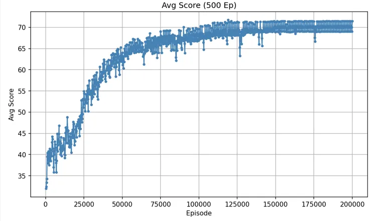
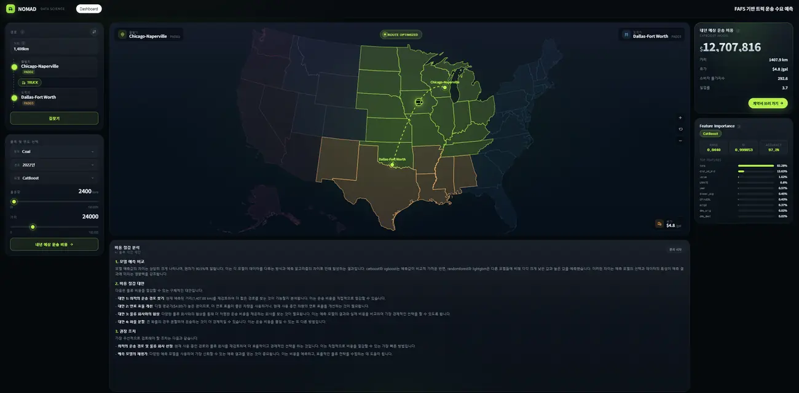

안녕하세요, 박원찬입니다
AI Engineer
- 문제를 구조화하고, 끝까지 배포합니다데이터 수집부터 모델 학습·평가, 웹 서비스 배포까지 한 흐름으로 다룹니다.
- 결과를 의심하고, 다시 증명합니다캡스톤 결과에 숨은 데이터 누수를 직접 찾아내고, 사람과 같은 정보 조건에서 다시 학습해 48.8점으로 이겼습니다.
- 모델은 가볍게, 품질은 그대로GPTQ와 SparseGPT를 겹쳐 EXAONE 4.0 1.2B를 모바일용으로 압축했습니다.
- 에이전트가 일하는 환경을 만듭니다MCP 서버와 Agent SDK 팀으로 기획 → 구현 → QA를 자동화합니다.
System
request한 줄 요청"리팩터링하고 보고서까지"
leadClaude CodeMCP 서버 23개로 문서 검색 · 생성형 AI · 팀 호출
plan_team조사 → docs/plans/ 계획서
backend_teamworktree 브랜치에서 수정 · 테스트 실패 1→0
report_team직접 실행해 QA → report.html
asset_team픽셀아트 · 3D · BGM 생성
output브랜치 + 보고서merge는 사람이 결정
ThinkingSearchCodeWrite
Experiments
exp/02 · 데이터 · 예측
물류 운송비 예측
FAF5 화물 통계에 유가·거시경제·인구 데이터를 붙여, 거리만으로 설명되지 않는 비용을 예측했습니다.
View project ↗

About
Games + Data
= Me
게임을 분석하며 플레이하던 습관이 데이터로 판단하는 엔지니어링이 되었습니다. 강화학습, 예측 모델, LLM 경량화를 거쳐 지금은 에이전트가 일하는 환경을 만듭니다.
한양대학교 ERICA 지능정보양자공학 · 2027 상반기 졸업 예정Journey so far
- AI 개발 자동화 환경Agent SDK · MCP
- matail.party 운영Astro · Workers · D1
- STREAMS 재검증 · v17SGAZ · Unity 6
- LG AIMERS 8기 수료EXAONE 경량화
- 캡스톤 우수상STREAMS 에이전트
- 물류 산학 과제NGL Korea